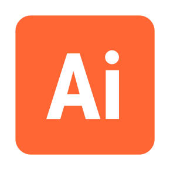
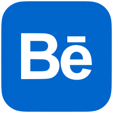

SOY PEDRO GODOY
PROGRAMADOR FULL STACK
PROGRAMADOR FULL STACK
¿QUIÉN SOY?
MIS PROYECTOS
REDES
HABILIDADES
CONTÁCTAME
¿QUIÉN SOY?
Soy un desarrollador web Full Stack Junior con una base sólida en tecnologías tanto de frontend como de backend.
Disfruto crear aplicaciones que combinan una buena experiencia visual con un funcionamiento eficiente.
Me interesa especialmente la forma en que el desarrollo web permite unir creatividad y lógica. Por eso me esfuerzo en escribir código claro, reutilizable y bien estructurado
Me gusta aprender nuevas tecnologías y adaptarme a distintos retos, lo que me ayuda a crecer constantemente como programador.
HABILIDADES
-
html
-

css
-

tailwind
-
javascript
HABILIDADES EXTRAS
-

illustrator
-
photoshop
-
capcut
CONTÁCTAME
MIS REDES
-
Linkedin
-
Github
-

Behance
¿QUIÉN SOY?
Soy un desarrollador web Full Stack Junior con una base sólida en tecnologías tanto de frontend como de backend.
Disfruto crear aplicaciones que combinan una buena experiencia visual con un funcionamiento eficiente.
Me interesa especialmente la forma en que el desarrollo web permite unir creatividad y lógica. Por eso me esfuerzo en escribir código claro, reutilizable y bien estructurado
Me gusta aprender nuevas tecnologías y adaptarme a distintos retos, lo que me ayuda a crecer constantemente como programador.
MÁS SOBRE MÍ...
Cuento con más de 10 años de experiencia en diseño gráfico y decidí dar un paso más.
Descubrí el mundo del desarrollo web, un lugar donde no solo podía imaginar cómo debía verse algo, sino también construirlo, darle vida y movimiento a lo que antes quedaba solo en un lienzo.
Mi objetivo es unir arte y código para transformar ideas en experiencias digitales que se sientan vivas.
Con el diseño, aporto sensibilidad y estética, y gracias a la programación, tengo las herramientas para materializar esa visión en experiencias digitales completas.